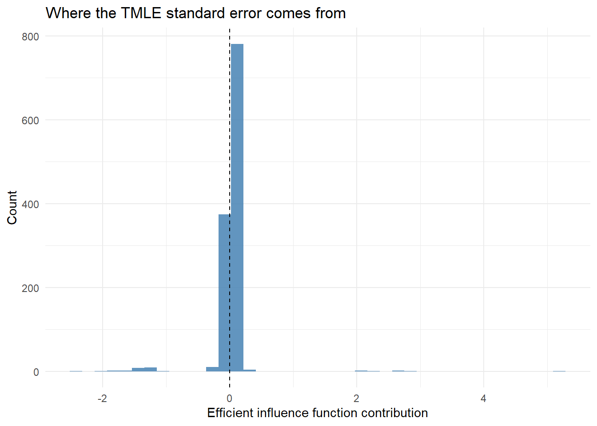

Show code
library(tidyverse)
download.file("https://raw.githubusercontent.com/amertens/causal-learning-handbook/main/_data/load-haart-cohort.R", "load-haart-cohort.R")
source("load-haart-cohort.R")
dat <- as_tibble(haart_baseline)
n <- nrow(dat)Bridging outcome modeling and weighting for more robust causal effect estimation
Estimated reading time: 50 minutes
In previous chapters, you learned:
G-computation depends entirely on the outcome model; IPTW depends entirely on the treatment model. AIPW and TMLE combine both, providing consistency if either model is correctly specified.
A doubly robust estimator provides consistency if either the treatment model or the outcome model is correctly specified (Laan and Rose 2011; Bang and Robins 2005). By combining both sources of information, doubly robust estimators provide two chances to get it right and often outperform g-computation or IPTW used alone (Schuler and Rose 2017; Smith et al. 2023). The goal remains the same as in previous chapters: estimate \(E[Y(1)] - E[Y(0)]\), the population-level risk difference.
AIPW (Robins, Rotnitzky, and Zhao 1994; Bang and Robins 2005) and TMLE (Laan and Rubin 2006) are not competing methods aimed at different problems. They are two strategies for solving the same problem: producing an estimator of the ATE that is doubly robust, semiparametrically efficient, and uses both the outcome model \(Q(A, W) = E[Y \mid A, W]\) and the propensity score \(g(W) = P(A=1 \mid W)\). Both estimators are derived from the efficient influence function (EIF) for the ATE, and under regularity conditions both achieve the same asymptotic distribution and the same semiparametric efficiency bound.
What separates them is how they incorporate the EIF:
Both routes arrive at an estimator with the same large-sample behaviour. The structural difference (a sum versus a substitution) is what generates the practical differences we will revisit at the end of the chapter: TMLE estimates respect the bounds of the outcome scale (e.g., probabilities stay in \([0, 1]\)), are interpretable as means of valid counterfactual predictions, and integrate naturally with cross-validated machine learning. AIPW is simpler to code and equally valid when propensity scores are well-behaved.
AIPW and TMLE are two of three standard strategies for turning the same efficient influence function into an estimator. All three are asymptotically equivalent and share the same standard error; they differ in finite samples.
On large samples with good overlap the three agree. The differences appear in finite samples and under poor overlap, which is why TMLE is the usual default for bounded outcomes.
Almost any estimator in this book can be rewritten, to a close approximation, as a simple average of one number per patient. That per-patient number is the patient’s value of the influence function: it says how far, and in which direction, that single patient pulls the final estimate. Two consequences are all an applied reader needs. The spread of those per-patient pulls is what sets the standard error: take their standard deviation and divide by the square root of the sample size. And an estimator reaches the smallest possible standard error when its influence function is the efficient one; TMLE earns that efficiency by nudging the fitted models until the pulls average to zero.
Every patient casts a vote on the final estimate. Most votes are quiet, but a few loud ones set the margin of error. A two-patient picture makes it concrete. Imagine the estimate is a risk difference and we have computed each patient’s influence value. An ordinary patient, well matched on covariates with a predictable outcome, might have an influence value near \(0\), so dropping them barely moves the estimate. A high-leverage patient, say a treated patient whose propensity score was only \(0.03\) (very unlikely to be treated) and who then had the outcome, might have an influence value of \(+18\): that one patient hauls the estimate upward, and a handful like them widen the confidence interval. The standard error is just the standard deviation of these per-patient values over the square root of \(n\), so a few large values inflate it. The inference code later in this chapter computes exactly these per-patient numbers.
AIPW augments the G-computation estimator with an inverse-probability-weighted residual correction. The construction guarantees that:
This is the one-step idea from semiparametric theory: take a plug-in estimator, add the empirical mean of the EIF correction, and the result is a \(\sqrt{n}\)-consistent estimator that solves the EIF estimating equation (Robins, Rotnitzky, and Zhao 1994; Bang and Robins 2005).
Note that “doubly robust” is a consistency property: it guarantees the estimator converges to the truth as \(n \to \infty\) under the stated conditions, not that it is unbiased in finite samples.
Let:
Then:
\[ \hat{\mu}_1 = \frac{1}{n} \sum_i \left[ m(1, W_i) + \frac{A_i}{g(W_i)} \big(Y_i - m(1, W_i)\big) \right] \]
\[ \hat{\mu}_0 = \frac{1}{n} \sum_i \left[ m(0, W_i) + \frac{1 - A_i}{1 - g(W_i)} \big(Y_i - m(0, W_i)\big) \right] \]
ATE = \(\hat{\mu}_1 - \hat{\mu}_0\)
The structure is G-computation plus an EIF correction: the first term, \(m(a, W_i)\), is the outcome-model prediction (the G-computation ingredient); the second term is an IPW-weighted residual that corrects any bias in the outcome model. If \(m\) is correct, the residuals average to zero and the correction vanishes (we recover G-computation). If \(m\) is wrong but \(g\) is correct, the IPW correction fixes the bias (we recover IPTW-style behaviour). The “augmentation” in AIPW’s name refers exactly to adding this correction to the G-computation plug-in.
Qmod <- glm(died ~ ever_haart + age + sex + cd4_sqrt_baseline,
family = binomial, data = dat)
gmod <- glm(ever_haart ~ age + sex + cd4_sqrt_baseline,
family = binomial, data = dat)
dat <- dat %>%
mutate(
ps = predict(gmod, type = "response"),
Q1 = predict(Qmod, newdata = mutate(dat, ever_haart = 1), type = "response"),
Q0 = predict(Qmod, newdata = mutate(dat, ever_haart = 0), type = "response")
)aipw_est <- with(dat, {
mu1 <- mean( Q1 + ever_haart * (died - Q1) / ps )
mu0 <- mean( Q0 + (1 - ever_haart) * (died - Q0) / (1 - ps) )
ate <- mu1 - mu0
c(mu1 = mu1, mu0 = mu0, ate = ate)
})
aipw_est mu1 mu0 ate
0.01693363 0.03113330 -0.01419967 Each AIPW component starts with the outcome-model prediction and adds a weighted residual correction. For instance, Q1 + ever_haart * (died - Q1) / ps corrects \(m(1, W)\) by upweighting the residual \((\text{died} - Q1)\) for treated individuals. This structure gives AIPW its doubly robust property: even if \(Q\) is wrong, the IPW correction fixes the bias (and vice versa).
TMLE solves the same EIF estimating equation as AIPW, but it does so by modifying \(Q\) rather than by adding an external correction. After a small targeted update guided by the propensity score (the “clever covariate”), the substitution estimator \(\frac{1}{n}\sum_i [Q^*(1, W_i) - Q^*(0, W_i)]\) already solves the EIF equation by construction.
This substitution structure has three practical consequences:
Step 1: Fit the initial outcome model (Q). Fit a model for \(E[Y \mid A, W]\) and generate initial predictions under both treatment values for each individual: \(Q_n^0(1, W_i)\) (predicted outcome if treated) and \(Q_n^0(0, W_i)\) (predicted outcome if untreated). These predictions are “initial” because they have not yet been targeted toward the causal parameter of interest.
logit <- function(p) log(p/(1-p))
expit <- function(x) 1/(1+exp(-x))
# Step 1: Initial Q predictions at observed A
Qinit <- predict(Qmod, type="response")Step 2: Estimate the propensity score. The propensity score \(g(W) = P(A = 1 \mid W)\) is needed to construct the clever covariate in the next step. We already fit this model above.
# Step 2: Propensity scores (already estimated)
ps <- dat$psThe clever covariate \(H(A, W)\) is the key ingredient that makes TMLE “targeted.” It is derived from the efficient influence function for the ATE:
\[ H(A, W) = \frac{A}{g(W)} - \frac{1 - A}{1 - g(W)} \]
For computing the counterfactual means, we also need the treatment-specific components:
Think of it as a nudge that pushes hardest exactly where the outcome model is most vulnerable, the patients who got a treatment almost no one like them received. More precisely, the clever covariate is large when the received treatment was unlikely given the covariates: a small \(g(W)\) for a treated patient, or a small \(1 - g(W)\) for an untreated one. Those are exactly the patients where the outcome model is most likely to be wrong, because few similar patients received the same treatment, so the update leans hardest on them. In this way the clever covariate directs the fluctuation to reduce bias for the specific causal estimand we care about, the ATE.
# Step 3: Clever covariate at observed treatment
1H <- with(dat, ever_haart/ps - (1-ever_haart)/(1-ps))Step 4: Fit the fluctuation model and update predictions. This is the critical “targeting” step, and it is where TMLE structurally diverges from AIPW. Instead of adding the EIF correction to the G-computation estimate (the AIPW recipe), we use the propensity score (via the clever covariate) to update Q until the correction term vanishes inside the substitution estimator.
We fit a logistic regression of \(Y\) on \(H\) with the initial logit-predictions as an offset:
\[ \text{logit}(E[Y \mid A, W]) = \text{logit}(Q_n^0(A, W)) + \epsilon \cdot H(A, W) \]
The estimated \(\hat{\epsilon}\) is then used to update (fluctuate) the initial predictions. This fluctuation must be applied to the counterfactual predictions \(Q_n^0(1, W)\) and \(Q_n^0(0, W)\) using their respective clever covariates \(H_1\) and \(H_0\). This step ensures the final estimates solve the efficient influence function equation, which is what gives TMLE its optimal statistical properties.
The targeting step is not trying to improve prediction in general. It is adjusting the initial outcome predictions specifically to reduce bias for the ATE. A well-calibrated prediction model might predict individual outcomes accurately but still produce a biased ATE when predictions are averaged. The fluctuation step corrects for exactly this discrepancy by incorporating information from the propensity score.
-1 suppresses the intercept; offset(logit(Qinit)) fixes the initial Q predictions on the logit scale so only the coefficient on H (the fluctuation parameter ε) is estimated
.coef extracts the single ε; a small number close to zero means the initial Q needed little correction
# Get initial (pre-fluctuation) predictions under each treatment
Q1_init <- predict(Qmod, newdata = mutate(dat, ever_haart = 1), type="response")
Q0_init <- predict(Qmod, newdata = mutate(dat, ever_haart = 0), type="response")
# Clever covariates for counterfactual treatment values
1H1 <- 1 / ps
H0 <- -1 / (1 - ps)
# Apply the fluctuation to counterfactual predictions
2Q1_star <- plogis(logit(Q1_init) + epsilon * H1)
Q0_star <- plogis(logit(Q0_init) + epsilon * H0)
# TMLE ATE estimate
3tmle_ate <- mean(Q1_star) - mean(Q0_star)
tmle_ateplogis() maps back to probability; guaranteeing all targeted predictions stay in \([0,1]\), unlike AIPW which can violate these bounds
[1] -0.01419379The initial outcome and propensity score models do not have to be simple GLMs. They can be estimated with Super Learner (Laan, Polley, and Hubbard 2007), an ensemble machine learning approach covered in the next chapter, which reduces sensitivity to model misspecification.
A major advantage of TMLE is that inference follows directly from the efficient influence function (EIF). Using the clever covariate notation from Section 7, where \(H(A, W) = A/g(W) - (1-A)/(1-g(W))\), the EIF for the ATE at the TMLE fit can be written in a single unified form:
\[ D_i = H(A_i, W_i)\big(Y_i - Q^*(A_i, W_i)\big) + Q^*(1, W_i) - Q^*(0, W_i) - \hat{\psi} \]
Equivalently, expanding \(H\) into its treatment-arm-specific components \(H_1(W) = 1/g(W)\) and \(H_0(W) = -1/(1-g(W))\) (which already include the sign for each arm):
\[ D_i = \frac{A_i}{e(W_i)}\big(Y_i - Q_1^*(W_i)\big) - \frac{1-A_i}{1-e(W_i)}\big(Y_i - Q_0^*(W_i)\big) + Q_1^*(W_i) - Q_0^*(W_i) - \hat{\psi} \]
where \(\hat{\psi}\) is the TMLE ATE estimate. The variance of the ATE is estimated by the sample variance of the EIF divided by \(n\): \(\hat{\sigma}^2 = \frac{1}{n}\sum_i D_i^2\).
The same EIF underlies AIPW’s variance estimator, which is the deeper reason both estimators have the same asymptotic distribution. They differ in how they form the point estimate, not in the influence function used for inference.
The EIF-based variance estimator and resulting Wald-type confidence intervals are asymptotically valid when (i) at least one nuisance model is consistently estimated, (ii) positivity holds, and (iii) certain regularity/rate conditions are met. When data-adaptive or machine learning methods are used for nuisance estimation, these conditions require cross-fitting (sample-splitting) or CV-TMLE to avoid empirical process conditions (Donsker class membership) that flexible learners typically violate. In the tmle3 and drtmle R packages, cross-fitting is available (Zivich and Breskin 2021); the classic tmle package (Gruber and Laan 2012) does not cross-fit by default but remains valid when the Super Learner library is not too aggressive (e.g., excludes highly adaptive learners like HAL without cross-fitting). See Zheng and Laan (2011) for the theoretical foundations.
library(ggplot2)
tibble(eic = EIC) |>
ggplot(aes(eic)) +
geom_histogram(bins = 40, fill = "steelblue", alpha = 0.85) +
geom_vline(xintercept = mean(EIC), linetype = "dashed") +
labs(x = "Efficient influence function contribution", y = "Count",
title = "Where the TMLE standard error comes from") +
theme_minimal()
# Observed outcomes
Y_obs <- dat$died
# EIF (efficient influence function) components
# For treated: use Q1_star; for control: use Q0_star
# But we need Q* at the OBSERVED A for the residual terms
1Qstar_obs <- ifelse(dat$ever_haart == 1, Q1_star, Q0_star)
H_obs <- ifelse(dat$ever_haart == 1, H1, H0)
# Efficient influence function for each observation
2EIC <- H_obs * (Y_obs - Qstar_obs) + Q1_star - Q0_star - tmle_ate
# Standard error and 95% CI
3tmle_se <- sqrt(var(EIC) / n)
ci_lower <- tmle_ate - 1.96 * tmle_se
ci_upper <- tmle_ate + 1.96 * tmle_se
tibble(
Estimate = tmle_ate,
SE = tmle_se,
CI_lower = ci_lower,
CI_upper = ci_upper
)# A tibble: 1 × 4
Estimate SE CI_lower CI_upper
<dbl> <dbl> <dbl> <dbl>
1 -0.0142 0.00916 -0.0321 0.00376The EIF-based standard error is a key output of TMLE. Because the fluctuation step solves the EIF estimating equation, the resulting confidence interval achieves approximately correct coverage under regularity conditions, even when machine learning is used for the nuisance models (provided cross-fitting or other sample-splitting techniques are employed). If the confidence interval excludes zero, we have evidence that the treatment has a non-null causal effect on the outcome at the 95% confidence level.
The chapter opened with the claim that AIPW and TMLE are two roads to the same destination. With both estimators now in hand, we can be precise about what is shared and what is not.
Both AIPW and TMLE are constructed from the same efficient influence function for the ATE. As a direct consequence:
In large samples, on data with well-behaved propensity scores, AIPW and TMLE are essentially indistinguishable. They differ in finite samples, and they differ in their structural form.
The structural distinction is additive correction (AIPW) versus substitution / fluctuation (TMLE), and almost every practical difference flows from it.
| Property | AIPW | TMLE |
|---|---|---|
| How the EIF equation is solved | Add the empirical EIF correction to G-computation | Update \(Q \to Q^*\) until the substitution estimator solves it |
| Form of the estimator | Sum of plug-in + IPW-weighted residual | Mean of \(Q^*(1, W) - Q^*(0, W)\) |
| Predictions bounded in \([0, 1]\) | No: the IPW correction is unbounded; with extreme \(g\), the estimate can exit the parameter space | Yes: logit-scale fluctuation guarantees \(Q^* \in [0, 1]\) |
| Plug-in interpretability | No: sums of residuals do not decompose cleanly | Yes: every estimate is a mean of valid counterfactual predictions |
| Integration with Super Learner | Works with cross-fitting (DML-style) (Chernozhukov et al. 2018; van der Laan 2019) | Designed alongside Super Learner; CV-TMLE is the standard recipe |
| Implementation complexity | Simple (one formula) | Moderate (initial fit + fluctuation + targeted predictions) |
| Inference (EIF-based SEs) | Yes | Yes |
The most consequential of these is boundedness. When some propensity scores are near 0 or 1, the AIPW correction term \(\frac{A}{g(W)}(Y - Q(1,W))\) can be large in magnitude and same-signed across many observations. Adding it to the G-computation plug-in can produce probability estimates above 1 or below 0, or risk-difference estimates outside \([-1, 1]\). TMLE absorbs the same correction into \(Q\) on the logit scale, so the substitution estimator is always a mean of valid probabilities. This is a structural guarantee, not a finite-sample lucky break.
The following deliberately small, extreme example exposes the mechanism. Two treated patients had a propensity score of only \(0.02\) (they looked very unlikely to be treated) and did have the outcome, so their inverse-probability weights are enormous.
g <- c(0.02, 0.02, 0.50, 0.50, 0.98, 0.98)
A <- c(1, 1, 1, 0, 1, 0)
Y <- c(1, 1, 0, 0, 1, 0)
Q1 <- c(0.30, 0.30, 0.40, 0.40, 0.60, 0.60) # outcome-model risk under treatment
# AIPW estimate of the treated-world mean E[Y(1)]: plug-in plus IPW correction
aipw_mu1 <- mean(Q1 + (A == 1) / g * (Y - Q1))
round(aipw_mu1, 2)[1] 12.03The AIPW estimate of a probability comes out far above 1, which is impossible: the unbounded \(A/g(W)\) correction, summed over a few enormous weights, pushed the plug-in outside the parameter space. TMLE folds the same correction into the outcome model on the logit scale, so every updated prediction is plogis(...), a genuine probability strictly between 0 and 1. Averaging numbers that each lie in \([0, 1]\) cannot leave \([0, 1]\), so the TMLE substitution estimate stays in range no matter how extreme the propensity scores. That single property is the practical reason to prefer TMLE when overlap is poor.
In practice the choice usually comes down to four questions:
Because both estimators target the same EIF on the same data with the same nuisance fits, their point estimates and standard errors should be very close.
# AIPW point estimate and EIF-based SE on the same nuisances
mu1_aipw <- with(dat, mean( Q1 + ever_haart * (died - Q1) / ps ))
mu0_aipw <- with(dat, mean( Q0 + (1 - ever_haart) * (died - Q0) / (1 - ps) ))
aipw_ate <- mu1_aipw - mu0_aipw
# AIPW EIF (uses the un-targeted Q, not Q*)
H1_raw <- 1 / dat$ps
H0_raw <- -1 / (1 - dat$ps)
Q_obs <- with(dat, ifelse(ever_haart == 1, Q1, Q0))
H_obs_raw <- with(dat, ifelse(ever_haart == 1, H1_raw, H0_raw))
EIF_aipw <- H_obs_raw * (dat$died - Q_obs) + dat$Q1 - dat$Q0 - aipw_ate
aipw_se <- sqrt(var(EIF_aipw) / n)
bind_rows(
tibble(Estimator = "AIPW", ATE = aipw_ate, SE = aipw_se,
CI_lower = aipw_ate - 1.96 * aipw_se,
CI_upper = aipw_ate + 1.96 * aipw_se),
tibble(Estimator = "TMLE", ATE = tmle_ate, SE = tmle_se,
CI_lower = ci_lower, CI_upper = ci_upper)
) |> knitr::kable(digits = 4, caption = "AIPW and TMLE on the same HAART data and nuisances")| Estimator | ATE | SE | CI_lower | CI_upper |
|---|---|---|---|---|
| AIPW | -0.0142 | 0.0092 | -0.0322 | 0.0038 |
| TMLE | -0.0142 | 0.0092 | -0.0321 | 0.0038 |
The two estimates and their standard errors should agree to within roughly the third decimal. They are not identical because the AIPW estimator uses the initial \(Q\) inside the substitution component while TMLE uses the targeted \(Q^*\), and the fluctuation step gently shifts \(Q^*\) away from \(Q\) by an amount governed by \(\hat\epsilon\). When propensity scores are well-behaved (as they are here), \(\hat\epsilon\) is small and the gap is correspondingly small. When some propensity scores are extreme, \(\hat\epsilon\) can be larger and the two estimators diverge, a useful diagnostic that the boundedness and stability advantages of TMLE are starting to matter.
sessionInfo()R version 4.4.2 (2024-10-31 ucrt)
Platform: x86_64-w64-mingw32/x64
Running under: Windows 11 x64 (build 26200)
Matrix products: default
locale:
[1] LC_COLLATE=English_United States.utf8
[2] LC_CTYPE=English_United States.utf8
[3] LC_MONETARY=English_United States.utf8
[4] LC_NUMERIC=C
[5] LC_TIME=English_United States.utf8
time zone: America/Los_Angeles
tzcode source: internal
attached base packages:
[1] stats graphics grDevices utils datasets methods base
other attached packages:
[1] ipw_1.2.1 lubridate_1.9.3 forcats_1.0.0 stringr_1.6.0
[5] dplyr_1.1.4 purrr_1.0.2 readr_2.1.5 tidyr_1.3.1
[9] tibble_3.2.1 ggplot2_4.0.3 tidyverse_2.0.0
loaded via a namespace (and not attached):
[1] utf8_1.2.4 generics_0.1.3 stringi_1.8.7 lattice_0.22-6
[5] hms_1.1.3 digest_0.6.37 magrittr_2.0.3 evaluate_1.0.5
[9] grid_4.4.2 timechange_0.3.0 RColorBrewer_1.1-3 fastmap_1.2.0
[13] jsonlite_2.0.0 Matrix_1.7-1 nnet_7.3-19 backports_1.5.0
[17] survival_3.7-0 fansi_1.0.6 scales_1.4.0 cli_3.6.5
[21] rlang_1.1.7 splines_4.4.2 geepack_1.3.12 withr_3.0.2
[25] yaml_2.3.10 tools_4.4.2 tzdb_0.4.0 broom_1.0.12
[29] vctrs_0.7.1 R6_2.6.1 lifecycle_1.0.5 htmlwidgets_1.6.4
[33] MASS_7.3-65 pkgconfig_2.0.3 pillar_1.9.0 gtable_0.3.6
[37] glue_1.8.0 xfun_0.49 tidyselect_1.2.1 knitr_1.49
[41] farver_2.1.2 htmltools_0.5.8.1 labeling_0.4.3 rmarkdown_2.29
[45] compiler_4.4.2 S7_0.2.1 No. “Doubly robust” means the estimator is consistent if either the treatment model or the outcome model is correctly specified, but not necessarily if both are wrong. It does not give you license to ignore model specification. If both nuisance models are badly misspecified, the estimator can be biased. In practice, you should still try to specify both models as carefully as possible. The double robustness property is an insurance policy, not a substitute for thoughtful modeling.
The clever covariate \(H(A, W) = A / g(W) - (1 - A) / (1 - g(W))\) is derived from the efficient influence function for the ATE. It directs the fluctuation of the initial outcome model toward the specific causal parameter of interest, ensuring that the final estimate solves the EIF estimating equation. If propensity scores are extreme (near 0 or 1), the clever covariate becomes very large, which can destabilize the fluctuation step. This is why practical positivity (adequate overlap in propensity score distributions) is important for TMLE just as it is for IPTW.
Yes, and this is the structural reason TMLE is generally preferred for bounded outcomes, not merely a numerical curiosity. AIPW is a sum: the G-computation plug-in plus an unbounded IPW-weighted residual correction. When propensity scores are extreme, the correction can be large enough to push the sum outside the parameter space. TMLE absorbs the same correction into \(Q\) on the logit scale, so the substitution estimator is the mean of valid probabilities and stays in \([0, 1]\) by construction. The two estimators target the same EIF; they differ in how they keep the result inside the parameter space.
In large samples on data with well-behaved propensity scores, yes; they share the same asymptotic distribution and the same EIF-based standard errors. Visible disagreement between the two estimates usually points to a specific cause: (i) some propensity scores are near 0 or 1, so the AIPW correction is large and the fluctuation parameter \(\hat\epsilon\) is non-trivial; (ii) one nuisance is much more wrong than the other, so the boundedness behaviour matters; or (iii) the sample is small and the estimators’ finite-sample distributions have not yet converged to the asymptotic one. A meaningful AIPW versus TMLE gap is therefore a useful diagnostic, not a contradiction.
This chapter presented the theory and mechanics of AIPW and TMLE. Both estimators rely on nuisance models, and the quality of those models directly affects performance. The next chapter introduces Super Learner, the ensemble machine learning tool that makes nuisance estimation flexible and data-adaptive.
This example demonstrates the double robustness property using the tmle package (Gruber and Laan 2012). We deliberately misspecify one nuisance model at a time to show that the TMLE estimate remains consistent as long as at least one model is correct. For accessible introductions to the tmle package in applied settings, see Hoffman (2020) and Talbot et al. (2025).
tmle is unavailableset.seed(1)
n <- 1000
W <- rnorm(n)
A <- rbinom(n, 1, plogis(0.3 * W + 0.2 * W^2))
Y <- 0.5 * A + sin(W) + rnorm(n, sd = 0.3) # true ATE = 0.5
if (requireNamespace("tmle", quietly = TRUE)) {
library(tmle)
## Scenario A: correct Q model, misspecified g (intercept only)
1 fit_a <- tmle(Y = Y, A = A, W = data.frame(W = W),
2 Q.SL.library = c("SL.glm", "SL.earth"),
3 g.SL.library = "SL.mean")
cat("Scenario A (correct Q, wrong g):", round(fit_a$estimates$ATE$psi, 3), "\n")
## Scenario B: misspecified Q (intercept only), correct g
fit_b <- tmle(Y = Y, A = A, W = data.frame(W = W),
4 Q.SL.library = "SL.mean",
g.SL.library = c("SL.glm", "SL.earth"))
cat("Scenario B (wrong Q, correct g):", round(fit_b$estimates$ATE$psi, 3), "\n")
## Scenario C: both reasonably specified
fit_c <- tmle(Y = Y, A = A, W = data.frame(W = W),
Q.SL.library = c("SL.glm", "SL.earth"),
g.SL.library = c("SL.glm", "SL.earth"))
cat("Scenario C (both correct): ", round(fit_c$estimates$ATE$psi, 3), "\n")
cat("95% CI:", round(fit_c$estimates$ATE$CI, 3), "\n")
} else {
message("Install the 'tmle' package: install.packages('tmle')")
}tmle() from the tmle package automates all four TMLE steps; W must be a data.frame (not a matrix or bare vector)
Q.SL.library: the Super Learner library for the outcome model \(E[Y \mid A, W]\); SL.earth adds MARS splines to capture nonlinearity in the outcome
g.SL.library = "SL.mean": deliberately misspecified propensity score using only an intercept-only model (predicts the marginal mean treatment probability for everyone); this tests whether TMLE remains consistent when Q is correct but g is wrong
Q.SL.library = "SL.mean": deliberately misspecified outcome model; tests whether TMLE remains consistent when g is correct but Q is wrong; both Scenarios A and B should give estimates close to the true ATE = 0.5
Scenario A (correct Q, wrong g): 0.491
Scenario B (wrong Q, correct g): 0.504
Scenario C (both correct): 0.491
95% CI: 0.452 0.531